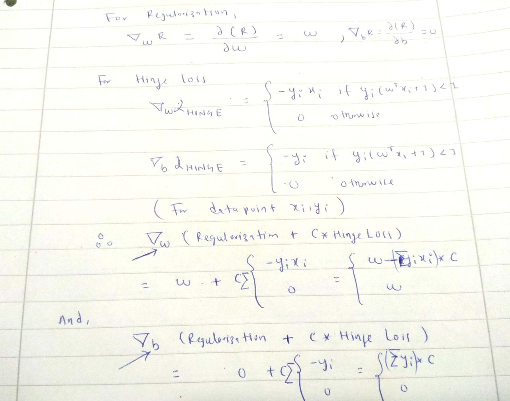

Implementation of stochastic subgradient descent for support vector machine using Python
In this post, we will see how we can train support vector machines using stochastic gradient descent (SGD). Before jumping to the algorithm, we need to know why subgradients?
Here is a brief summary of the 0-1 loss and hinge loss:

But, we don't we use 0-1 loss ?? The obvious reason is it is not convex. Another factor could be it's reaction to small changes in parameters. You can see from the graph, if you change (w,b) the loss will flip to either 0 or 1 very fast without acknowledging the in between values. The hinge loss,on the other hand, has smooth change until it reaches '1' along x-axis.


In [5]:
import pandas as pd
import numpy as np
In [12]:
def add_regularization(w, subgradient_w):
"""
The total loss :( 1/2 * ||w||^2 + Hingle_loss) has w term to be added after getting subgradient of 'w'
total_w = regularization_term + subgradient_term
i.e total_w = w + C * ∑ (-y*x)
"""
return w + subgradient_w
In [48]:
def subgradients(x, y, w, b, C):
"""
:x: inputs [[x1,x2], [x2,x2],...]
:y: labels [1, -1,...]
:w: initial w
:b: initial b
:C: tradeoff/ hyperparameter
"""
subgrad_w = 0
subgrad_b = 0
# sum over all subgradients of hinge loss for a given samples x,y
for x_i, y_i in zip(x,y):
f_xi = np.dot(w.T, x_i) + b
decision_value = y_i * f_xi
if decision_value < 1:
subgrad_w += - y_i*x_i
subgrad_b += -1 * y_i
else:
subgrad_w += 0
subgrad_b += 0
# multiply by C after summation of all subgradients for a given samples of x,y
subgrad_w = C * subgrad_w
subgrad_b = C * subgrad_b
return (add_regularization(w, subgrad_w), subgrad_b)
In [49]:
def stochastic_subgrad_descent(data, initial_values, B, C, T=1):
"""
:data: Pandas data frame
:initial_values: initialization for w and b
:B: sample size for random data selection
:C: hyperparameter, tradeoff between hard margin and hinge loss
:T: # of iterations
"""
w, b = initial_values
for t in range(1, T+1):
# randomly select B data points
training_sample = data.sample(B)
# set learning rate
learning_rate = 1/t
# prepare inputs in the form [[h1, w1], [h2, w2], ....]
x = training_sample[['height', 'weight']].values
# prepare labels in the form [1, -1, 1, 1, - 1 ......]
y = training_sample['gender'].values
sub_grads = subgradients(x,y, w, b, C)
# update weights
w = w - learning_rate * sub_grads[0]
# update bias
b = b - learning_rate * sub_grads[1]
return (w,b)
In [50]:
data = pd.DataFrame()
data['height'] = np.random.randint(160, 190, 100)
data['weight'] = np.random.randint(50, 90, 100)
data['gender'] = [-1 if value < 5 else 1 for value in np.random.randint(0,10, 100)]
data.head()
Out[50]:
In [51]:
initial_weights = np.array([-2, -3])
initial_bias = 12
initial_values = (initial_weights, initial_bias)
In [52]:
w,b = stochastic_subgrad_descent(data, initial_values, 20, 1, 1000)
In [53]:
w,b
Out[53]:
In [ ]: